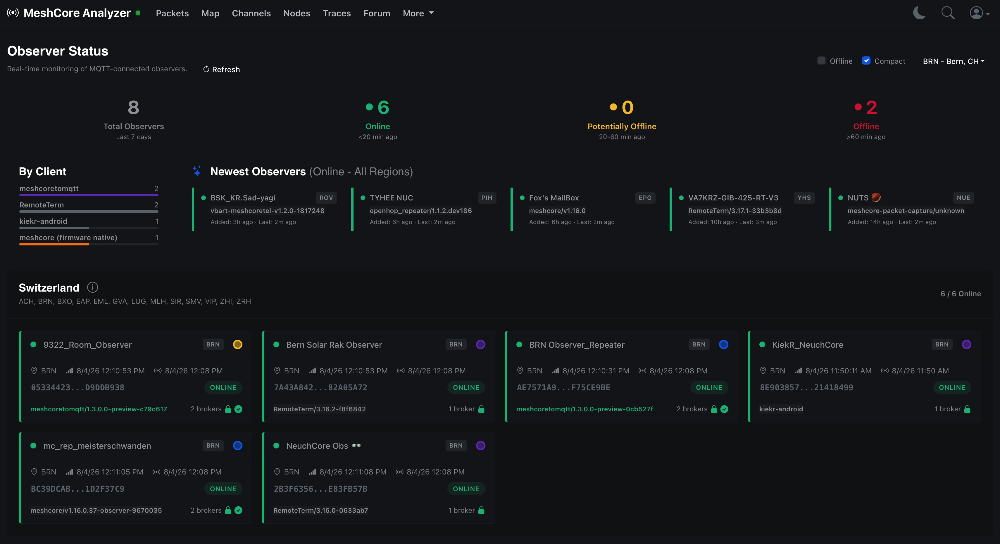
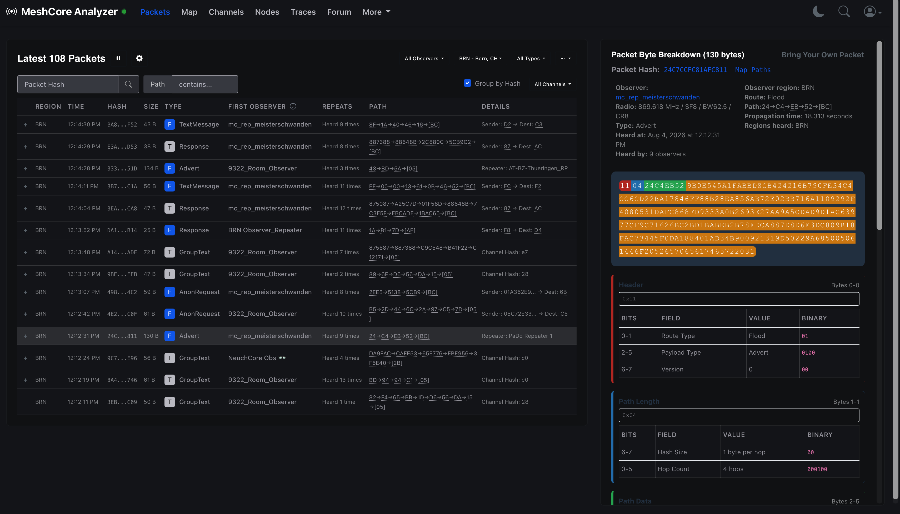
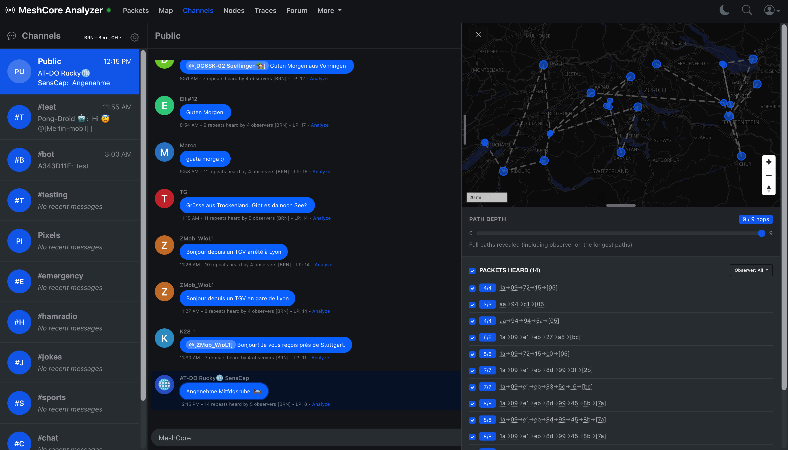
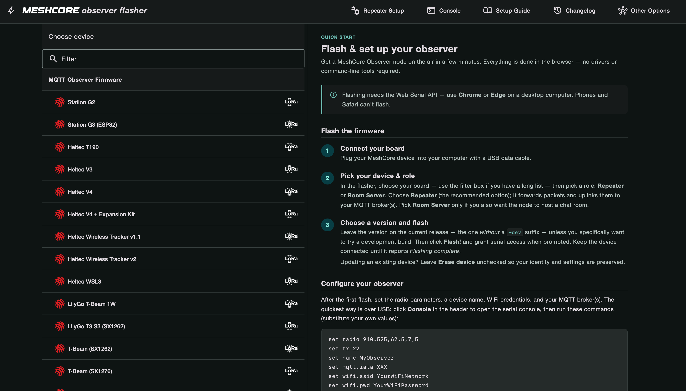
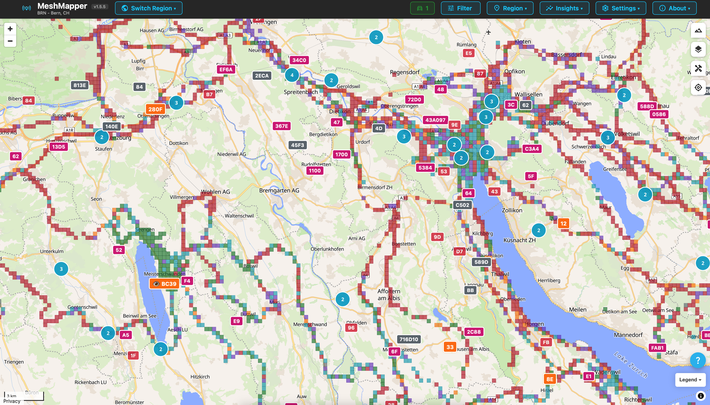

MeshCore observers
A MeshCore repeater normally has a simple job: receive LoRa packets and pass them on. An observer adds an internet connection to that setup. It still works as a repeater, but it also sends a copy of the packets it hears to an MQTT broker. Services such as letsmesh and MeshMapper can then use those reports to show what is happening on the mesh.
The mesh itself does not depend on the observer or on the internet. If the Wi-Fi connection goes down, radio traffic can still be repeated. What disappears is the outside view of that traffic. I think of the observer as a window into the mesh rather than part of the window frame.
The most useful observer is a fixed node with a good antenna and a reliable internet connection. One observer gives a local view. Several observers in different places make it possible to compare where a packet was heard and which route it took.
What letsmesh does
letsmesh collects the MQTT reports from observers and turns them into a live MeshCore analyzer.
The observer page is the first place I check after setting up a node. It shows whether the node is online, when it last reported, which region it belongs to and which observer software it is running.
My own observer/repeater appears there as mc_rep_meisterschwanden.
At the moment, BRN is the only letsmesh region for Switzerland and covers the whole country, not just Bern.

mc_rep_meisterschwanden, is shown online.The packet view goes much further. For each packet it can show the type, size, first observer, number of repeats and the path through the mesh. Opening a packet reveals its byte layout and the meaning of its header and path fields. This is useful when checking duplicate repeater IDs, comparing routes or finding out why a packet took an unexpected detour.

Known public channels can also be followed in a chat-like view. A selected message can be matched with all the routes reported by the observers and drawn on a map. This makes a string of hexadecimal repeater IDs much easier to understand.

An observer uploads packet data to an internet service. Public channels with known keys can be displayed, but letsmesh does not magically decrypt private channels or direct messages. Even when the contents stay encrypted, packet metadata is still being shared. The operator should know what the selected MQTT service collects before enabling it.
Setting up an ESP32 repeater observer
I am describing a fresh installation on a supported ESP32 LoRa board, such as a Heltec or LilyGo model listed by the observer flasher. The exact board variant matters because the display, radio and pin assignments differ. Check the label on the board instead of choosing the closest-looking entry.
What you need
- A supported ESP32 board with a LoRa radio for the band used in your country.
- A suitable antenna. Attach it before powering or transmitting with the board.
- A USB data cable. Some USB cables provide power but carry no data.
- A 2.4 GHz Wi-Fi network with internet access.
- Chrome or Edge on a desktop computer. The browser flasher uses Web Serial, which Safari and phones do not support.
1. Flash the observer firmware
Open the letsmesh observer onboarding page and follow its link to the current observer flasher. Connect the board over USB, choose its exact model, and select Repeater as the role. Use the current stable release unless you deliberately want to test a development build, then press Flash and grant the browser access to the serial port.
For a fresh install, the flasher may offer a merged image or an erase option. That is fine for a new board, but it can remove the existing identity and settings from a configured node. When updating an observer, use the non-merged image and leave Erase device unchecked unless you really want to start again.

2. Configure radio, Wi-Fi and MQTT
Keep the board connected after the flash and open Repeater Setup or Console in the flasher.
Set a recognisable node name, the radio preset used by the local mesh, the local region code, Wi-Fi credentials and the letsmesh MQTT preset.
The region code is normally an IATA-style code used to group observer data. Switzerland currently uses BRN as its single country-wide region.
The following is an example for the current Swiss mesh. It is not a worldwide configuration. The observer flasher generates an up-to-date command block, so use its values if they differ from this example.
set radio 869.618,62.5,8,8
set tx 22
set name MyObserver
set mqtt.iata BRN
set mqtt3.preset meshmapper
set wifi.ssid YourWiFiNetwork
set wifi.pwd YourWiFiPassword
set mqtt.rx on
set mqtt.tx advert
set bridge.enabled on
set repeat on
set path.hash.mode 1
set dutycycle 10
reboot
The first line is the Swiss 869.618 MHz / BW62.5 / SF8 / CR8 configuration.
In another country, replace it with the preset agreed on by the local MeshCore community. Transmit power also has to stay within the local EIRP and duty-cycle limits, including antenna gain and cable loss.
mqtt3.preset meshmapper connects the observer to the MeshMapper MQTT broker.
path.hash.mode 1 makes the repeater use the two-byte ID recommended by the Swiss MeshCore community in its own advertisements, which helps mapping tools distinguish repeaters that share the same first byte.
It does not stop the repeater from forwarding older one-byte paths.
The Swiss recommendations also currently call for a duty cycle of 10, zero-hop adverts disabled and a flood-advert interval of 49 hours. These settings are easiest to apply in the Repeater Setup form.
Before putting the repeater in service, change its default administrator password in Repeater Setup. The Swiss community recommends leaving the guest password empty so other users can read basic statistics without being able to change the node.
Do not publish the real command block from your console: it contains the Wi-Fi password. If the network name or password contains unusual characters, use the configuration form or check the flasher documentation before adding quotes.
3. Check that it is working
After the reboot, check the console for a Wi-Fi address and an MQTT connection. The firmware also provides useful status commands:
get wifi.status
get mqtt.status
get mqtt.iata
get mqtt.packets
get bridge.enabled
get repeatNext, open the observer list in letsmesh, select the same region and look for the node name. It can take a few minutes to appear. The board should show a recent last-seen time and an online state. If it does not, the usual causes are a wrong Wi-Fi password, a 5 GHz-only network, the wrong IATA region or an MQTT preset for the wrong part of the world.
Once it works on the bench, place it where the radio can actually hear something. Antenna height and a clear view matter much more than hiding the board in a convenient corner beside the router. Keep the ESP32, power supply and antenna connections dry, and do not expose a bare development board outdoors.
How MeshMapper works
letsmesh answers “what is the mesh doing?” MeshMapper answers a different question: “where can I use it?” It builds a coverage map from measurements collected while people walk, cycle or drive around with a MeshCore companion radio and a phone.
The MeshMapper app connects to the companion radio over Bluetooth.
The phone supplies GPS position and internet access, while the radio supplies the LoRa link. In the recommended Hybrid mode, the app alternates between a flooded #wardriving message and a direct discovery request.
It also records ordinary mesh packets heard along the way.
After a transmit ping, the app listens for the repeated packet coming back. Observers listening elsewhere may hear the same ping and report it over MQTT. That second view is valuable: it can confirm that the packet did not only come back to the sender, but also travelled through the mesh to an observer. MeshMapper uploads the GPS position, repeater path and signal measurements, then adds the result to the public map.
By default, the GPS coordinates go to the MeshMapper API and are not put into the radio message. The on-air message contains a short token that allows the app and backend to match the reports. There is a setting to broadcast coordinates over the mesh, but it is optional. The resulting coverage points are public, so it is still worth reading the privacy notice before starting a session.

This is the part I like about MeshMapper: the map shows measured coverage rather than drawing an optimistic circle around every repeater. Filters can separate repeaters, dates, signal levels, hop counts and radio configurations. Gaps in the tracks show where more surveying is needed, while repeated measurements make it easier to see whether an antenna change really improved anything.
For a first survey, install MeshMapper on a phone, enable Bluetooth and location, connect a MeshCore companion and choose the local region. Tell the app whether the antenna is outside and unobstructed, then start Hybrid mode and travel normally. Do not handle the phone while driving. Passive mode is a good choice when the region is busy because it avoids flooded channel messages, and Trace mode is useful when testing one particular repeater.
The short version
A repeater observer listens on LoRa, repeats packets and reports what it hears over Wi-Fi. letsmesh combines reports from many observers into a live view of packets and routes. MeshMapper combines GPS-tagged field measurements with those observer reports to build a map of real coverage. The three pieces are useful on their own, but together they make a MeshCore network much easier to understand and improve.